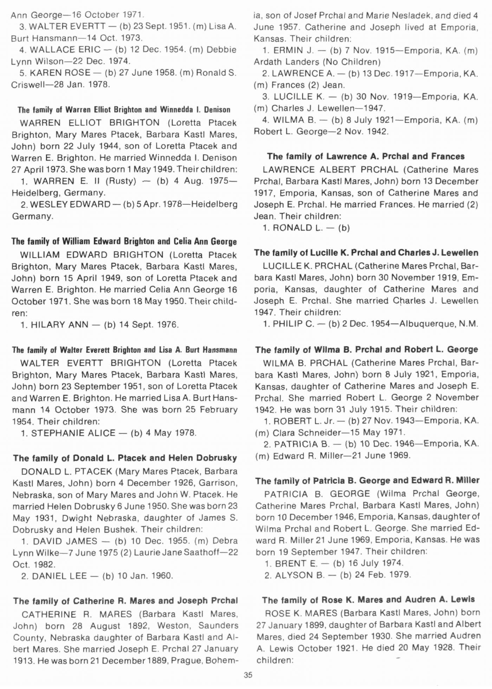

The book · The Family of John Kastl
Page 35 The family of Warren Elliot Brighton and Winnedda I. Denison


Transcription
Ann George—16 October 1971.
- WALTER EVERTT — (b) 23 Sept. 1951. (m) Lisa A. Burt Hansmann—14 Oct. 1973.
- WALLACE ERIC — (b) 12 Dec. 1954. (m) Debbie Lynn Wilson—22 Dec. 1974.
- KAREN ROSE — (b) 27 June 1958. (m) Ronald S. Criswell—28 Jan. 1978.
The family of Warren Elliot Brighton and Winnedda I. Denison
WARREN ELLIOT BRIGHTON (Loretta Ptacek Brighton, Mary Mares Ptacek, Barbara Kastl Mares, John) born 22 July 1944, son of Loretta Ptacek and Warren E. Brighton. He married Winnedda I. Denison 27 April 1973. She was born 1 May 1949. Their children:
- WARREN E. II (Rusty) — (b) 4 Aug. 1975—Heidelberg, Germany.
- WESLEY EDWARD — (b) 5 Apr. 1978—Heidelberg Germany.
The family of William Edward Brighton and Celia Ann George
WILLIAM EDWARD BRIGHTON (Loretta Ptacek Brighton, Mary Mares Ptacek, Barbara Kastl Mares, John) born 15 April 1949, son of Loretta Ptacek and Warren E. Brighton. He married Celia Ann George 16 October 1971. She was born 18 May 1950. Their children:
- HILARY ANN — (b) 14 Sept. 1976.
The family of Walter Everett Brighton and Lisa A. Burt Hansmann
WALTER EVERTT BRIGHTON (Loretta Ptacek Brighton, Mary Mares Ptacek, Barbara Kastl Mares, John) born 23 September 1951, son of Loretta Ptacek and Warren E. Brighton. He married Lisa A. Burt Hansmann 14 October 1973. She was born 25 February 1954. Their children:
- STEPHANIE ALICE — (b) 4 May 1978.
The family of Donald L. Ptacek and Helen Dobrusky
DONALD L. PTACEK (Mary Mares Ptacek, Barbara Kastl Mares, John) born 4 December 1926, Garrison, Nebraska, son of Mary Mares and John W. Ptacek. He married Helen Dobrusky 6 June 1950. She was born 23 May 1931, Dwight Nebraska, daughter of James S. Dobrusky and Helen Bushek. Their children:
- DAVID JAMES — (b) 10 Dec. 1955. (m) Debra Lynn Wilke—7 June 1975 (2) Laurie Jane Saathoff—22 Oct. 1982.
- DANIEL LEE — (b) 10 Jan. 1960.
The family of Catherine R. Mares and Joseph Prchal
CATHERINE R. MARES (Barbara Kastl Mares, John) born 28 August 1892, Weston, Saunders County, Nebraska daughter of Barbara Kastl and Albert Mares. She married Joseph E. Prchal 27 January 1913. He was born 21 December 1889, Prague, Bohemia, son of Josef Prchal and Marie Nesladek, and died 4 June 1957. Catherine and Joseph lived at Emporia, Kansas. Their children:
- ERMIN J. — (b) 7 Nov. 1915—Emporia, KA. (m) Ardath Landers (No Children)
- LAWRENCE A. — (b) 13 Dec. 1917—Emporia, KA. (m) Frances (2) Jean.
- LUCILLE K. — (b) 30 Nov. 1919—Emporia, KA. (m) Charles J. Lewellen—1947.
- WILMA B. — (b) 8 July 1921—Emporia, KA. (m) Robert L. George—2 Nov. 1942.
The family of Lawrence A. Prchal and Frances
LAWRENCE ALBERT PRCHAL (Catherine Mares Prchal, Barbara Kastl Mares, John) born 13 December 1917, Emporia, Kansas, son of Catherine Mares and Joseph E. Prchal. He married Frances. He married (2) Jean. Their children:
- RONALD L. — (b)
The family of Lucille K. Prchal and Charles J. Lewellen
LUCILLE K. PRCHAL (Catherine Mares Prchal, Barbara Kastl Mares, John) born 30 November 1919, Emporia, Kansas, daughter of Catherine Mares and Joseph E. Prchal. She married Charles J. Lewellen 1947. Their children:
- PHILIP C. — (b) 2 Dec. 1954—Albuquerque, N.M.
The family of Wilma B. Prchal and Robert L. George
WILMA B. PRCHAL (Catherine Mares Prchal, Barbara Kastl Mares, John) born 8 July 1921, Emporia, Kansas, daughter of Catherine Mares and Joseph E. Prchal. She married Robert L. George 2 November 1942. He was born 31 July 1915. Their children:
- ROBERT L. Jr. — (b) 27 Nov. 1943—Emporia, KA. (m) Clara Schneider—15 May 1971.
- PATRICIA B. — (b) 10 Dec. 1946—Emporia, KA. (m) Edward R. Miller—21 June 1969.
The family of Patricia B. George and Edward R. Miller
PATRICIA B. GEORGE (Wilma Prchal George, Catherine Mares Prchal, Barbara Kastl Mares, John) born 10 December 1946, Emporia, Kansas, daughter of Wilma Prchal and Robert L. George. She married Edward R. Miller 21 June 1969, Emporia, Kansas. He was born 19 September 1947. Their children:
- BRENT E. — (b) 16 July 1974.
- ALYSON B. — (b) 24 Feb. 1979.
The family of Rose K. Mares and Audren A. Lewis
ROSE K. MARES (Barbara Kastl Mares, John) born 27 January 1899, daughter of Barbara Kastl and Albert Mares, died 24 September 1930. She married Audren A. Lewis October 1921. He died 20 May 1928. Their children:
Transcriber’s notes
Two columns. Opens mid-item (child 2 WILLIAM EDWARD of Loretta Ptacek and Warren E. Brighton, continued from p. 34). The Catherine R. Mares paragraph wraps from bottom of left column ('Bohem-') to top of right column ('ia'). Name forms kept as printed: 'EVERTT' in child list and paragraph vs 'Everett' in heading; 'Heidelberg Germany' without comma for child 2; 'Nebraska daughter' and 'Dwight Nebraska' without commas. Ronald L. birth date blank in print. Page ends with 'Their children:' for Rose K. Mares and Audren A. Lewis; list continues on next page.